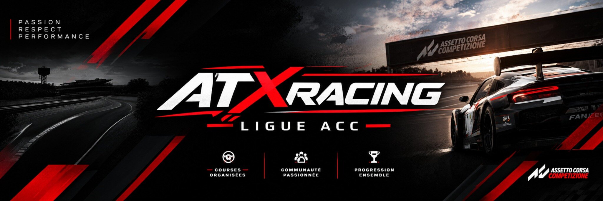

ATX Racing · Prochain événement en préparation
Inscriptions et calendrier via SimGrid
Infos et direction de course sur Discord
Résultats officiels · Performance · SAFE
Assetto Corsa Competizione · GT3

La branche événementielle d'ATX Motorsport
ATX Racing
ATX Racing : une nouvelle ligue ACC dédiée à la création et à l’organisation de courses, championnats et événements pour tous.
Trois catégories · Trois espaces
Plateforme actuelleAssetto Corsa Competizione
InscriptionsSimGrid
InformationsDiscord ATX Racing
ClassementsAprès chaque événement
Notre mission
Construire une ligue rapide, propre et respectueuse.
ATX Racing veut rassembler des pilotes fiables autour d’une compétition exigeante et fair-play. WorldGT, Daily Race ou Ballade ATX : chaque format possède désormais son espace, son identité et son classement. Retrouvez tous les rendez-vous dans le calendrier officiel.
Identité pilote
Votre saison. Votre profil.
Votre Steam ID reliera vos participations et vos résultats à un profil unique. Vous y retrouverez vos classements, vos meilleurs résultats, votre catégorie de performance et votre niveau de conduite SAFE.
ATX
Driver Profile
Steam ID · ATX Driver IDAlien
Événements—
Podiums—
Points—
Performance · AlienSAFE · Gold
Classement général
Chaque résultat construit votre progression.
Comparez les points cumulés, les victoires, les podiums, l’indice de rythme et la progression de tous les pilotes ATX Racing.